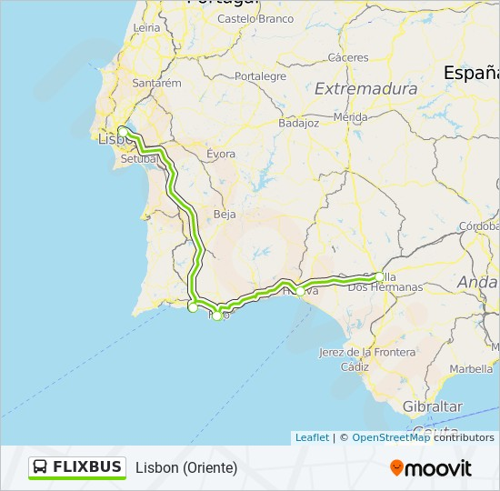
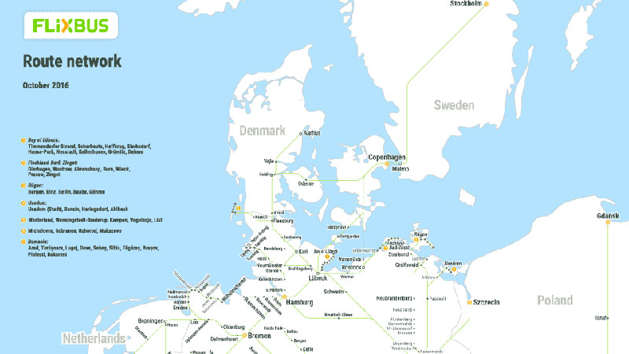
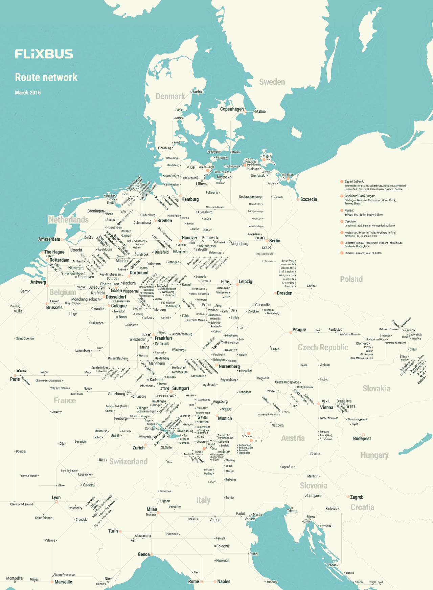
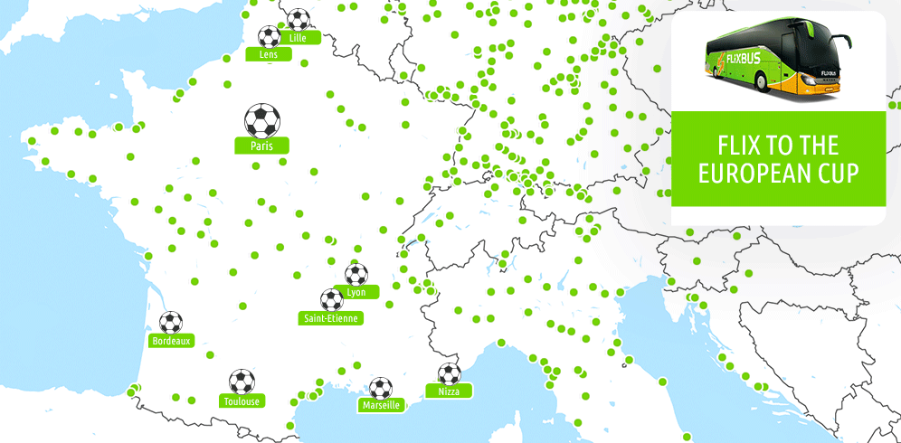
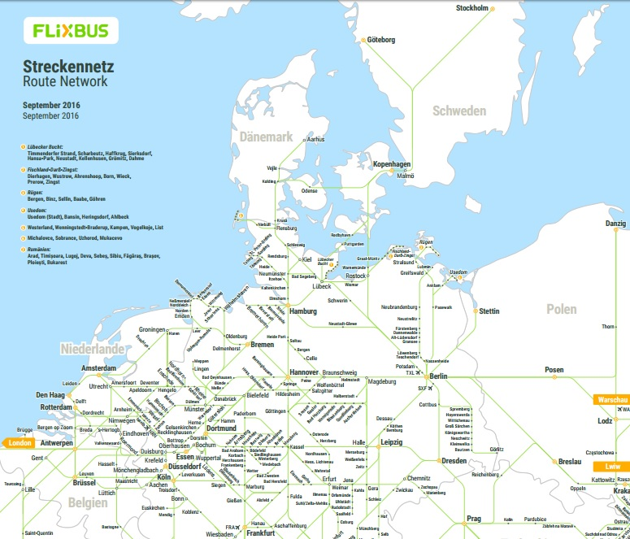
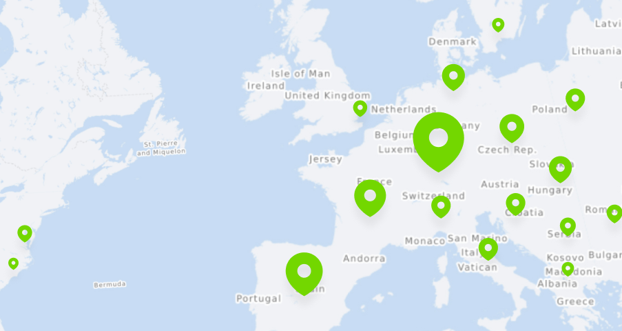

Flixbus and Ecolines for cheap European bus travel | Loyalty Traveler

Flixbus bus company Europe - cheap bus tickets | ComparaBUS.com

Review: Flixbus (Intercity Bus Service) – Travel Information and Tips ...

Ultimate Guide to Planning a Multi-Destination Trip

europe by BUS | Well-Traveled Wife

Flixbus and Ecolines for cheap European bus travel | Loyalty Traveler

Aka Bus | Foto Bugil Bokep 2017

Flixbus cheap coach service Amsterdam to Germany

FlixBus Launches New Routes in the Northeast From $7 One-Way

Spare money travelling in Europe with the bus, advantages and ...
- 
Bus - FLIXBUSFLIXBUS Line | Lisbon (Oriente)
- 
Bus to Croatia – Croatia:) rest + sights
- 
Submission – Official Map: Flixbus Route Network,... - Transit Maps
- 
European Championship 2016 | FlixBus
- 
FLIXBUS Discount over the Europe: tickets for €9.99! - TravelFree
- 
Cheap coach and bus travel throughout Europe | FlixBus